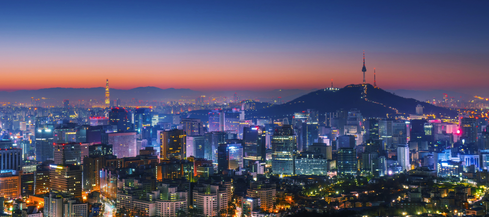
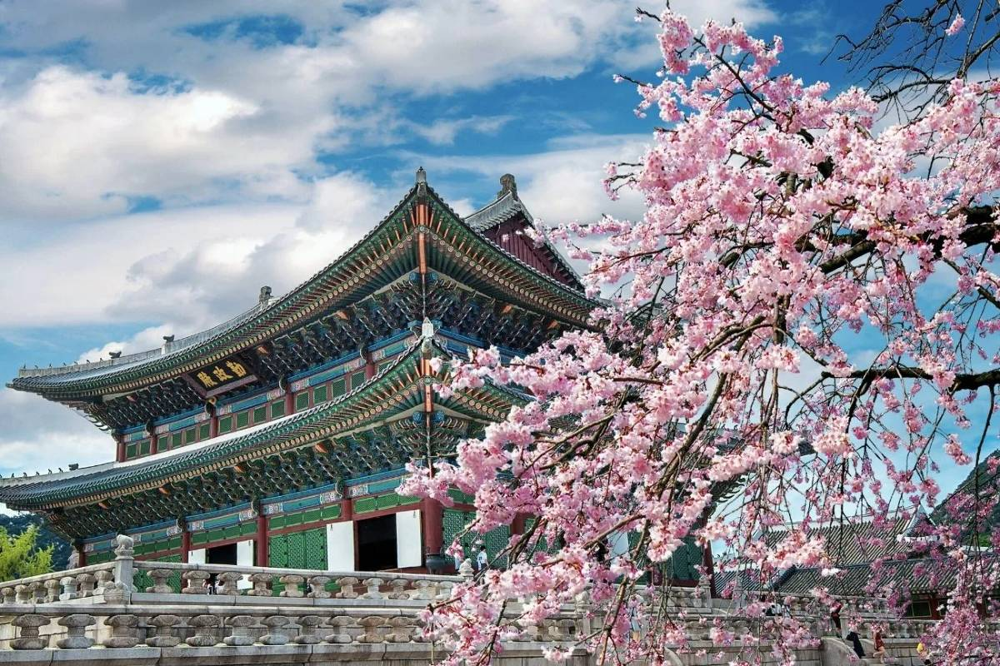
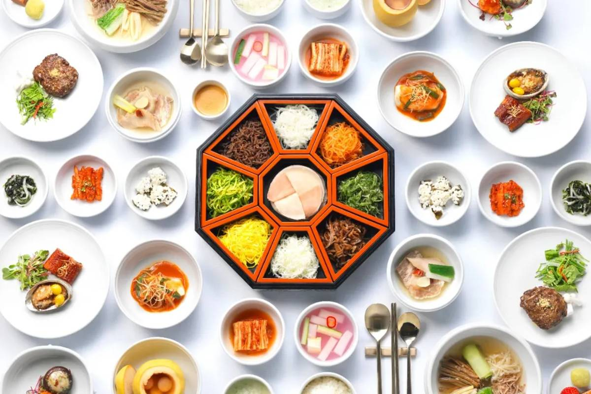
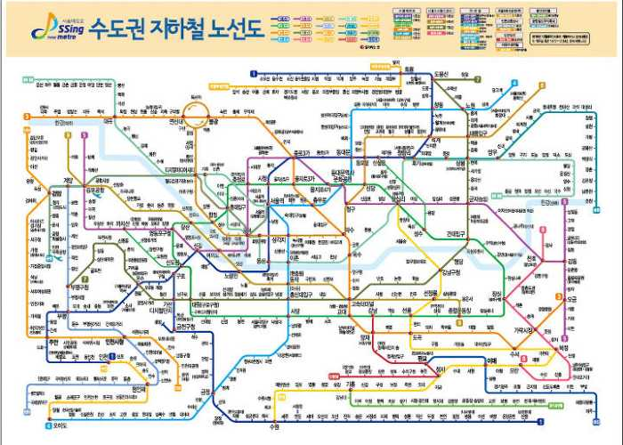
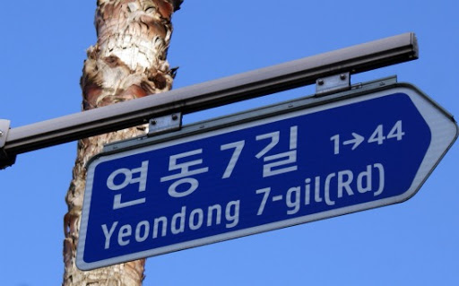
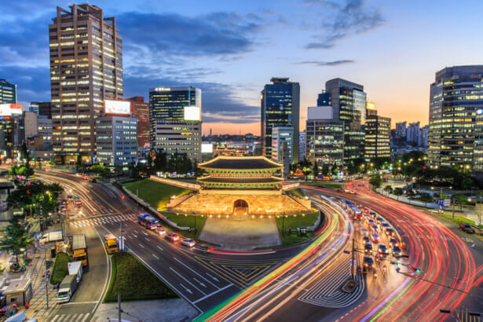
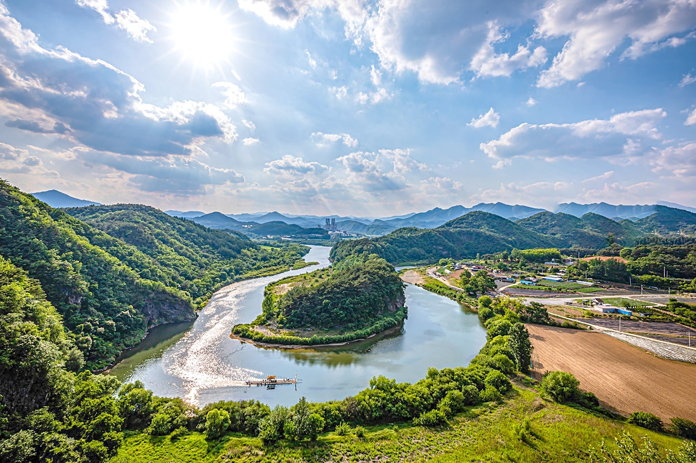

Overview
Purpose
Delivering information to people who plan to come travel to Asia and a brief introduction about Korea. By explaining Korea’s tourist spots, features, food, and Q&A, it will explain why Korea is an appropriate place to visit and why it is superior compared to other regions.
Audience
People who are interested in traveling and people who wants to expose in different cultures and places. It really can target anyone from age 18-however old you are who are able to travel.
Branding
Website Logo
Style Guide
Color Palette
Palette URL: https://coolors.co/29b4df-f1faee-ffabab-51e8cc
| Primary | Secondary | Accent 1 | Accent 2 |
|---|---|---|---|
| [#29b4df] | [#f1faee] | [#ffabab] | [#51e8cc] |
Typography
Heading Font: Kdam Thmor Pro
Paragraph Font: Nuosu SIL
Normal paragraph example
The best Whitewater Rafting in Colorado, White Water Rafting Company offers rafting on the Colorado and Roaring Fork Rivers in Glenwood Springs. Since 1974, we have been family owned and operated, rafting the Shoshone section of Glenwood Canyon and beyond.
Colored paragraph example
Trips vary from mild and great for families, to trips exclusively for physically fit and experienced rafters. No matter what type of river adventures you are seeking, White Water Rafting Company can make it happen for you.
Navigation
Site Map
Content
Home page
Purpose for the website Purpose of the website Are you looking for a place to travel? Well Korea it is! The most important things to consider when traveling are probably -tourist areas, food, shopping and activities. Our website contains information on the most authentic places and traditional foods that you can consider on your trip. This place will give you the accurate information to plan for your trip and will find a new world to enjoy. There is no need to get knowledge by browsing several blogs posted by other people. Come and get the most efficient travel plans!
Images for the Home page
- 
- 
- 
FAQ
Is it necessary to rent a car to travel? -The answer will be different depending on where you are traveling, but we would say the answer is NO. Most places in the downtown area of Korea are easy to get to by using public transportation. Korea is one of the countries with good public transportation, so you can easily find buses, subways, and taxis wherever you go, and it is arranged so that foreigners can easily find the way. Especially if you plan to travel in the city, it will be faster to use public transport due to heavy traffic. I can't speak Korean at all, can I travel? -Do not worry. If you can speak English, you will probably enjoy traveling easily. In most areas of Korea, both Korean and English are used for signs, road signs, public transportation, menus, etc. So you can easily find English wherever you go, and there are signs and information written in English at tourist destinations. Also, Koreans are a very friendly people to foreigners, so you can easily make friends and get their help.
Images for the FAQ
- 
- 
Activities
Korea has a long history more than 4000 years. From the beautiful palace where the king stayed in the past, the walls and buildings that protected it can still be seen here and there today. In Seoul, the largest city in Korea, modern buildings can be seen centered on the palace. Experience the beauty of the coexistence of the old and the modern! Korea is surrounded by sea on three sides and mountains in the inland. Even in the big city of Seoul, there are big and small mountains, but if you get out of there, you will be able to experience another beautiful scenery. Why don't you visit various places in Korea that are peaceful and full of affection and enjoy Korea's unique culture and emotions?
Images for the activities
- 
- 